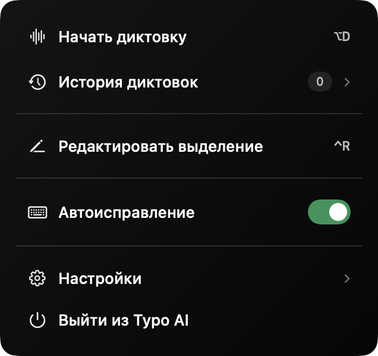
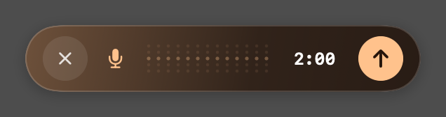
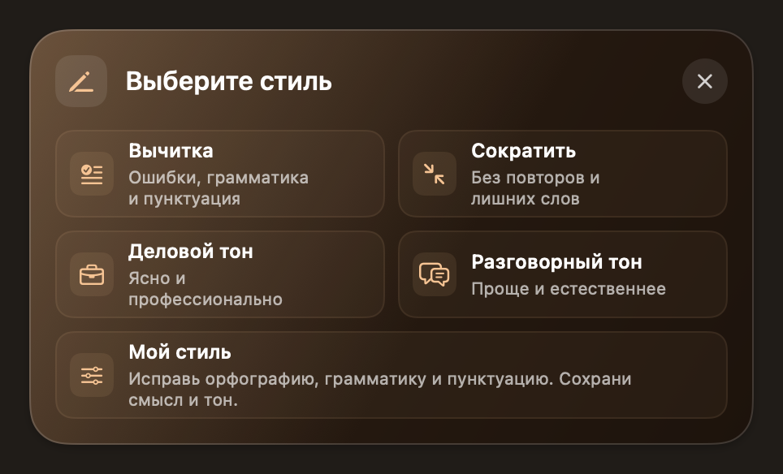

Диктовка и
редактура для Mac
Говорите прямо в поле ввода, правьте выделенный текст и исправляйте раскладку на ходу. Всё это можно делать локально.
Версия 3.1.6 Apple Silicon macOS 14+


Typo в действии
Диктуйте в любом поле
Надиктуйте сообщение, письмо или заметку. Текст появится там, где стоит курсор.
Перенесём созвон на завтра.

По умолчанию всё обрабатывается на Mac. В локальном режиме Typo не отправляет записи и текст в сеть. Если включить онлайн-провайдера, запись или выделенный текст отправятся выбранному сервису.
Установка
Typo AI
Сборка для Mac с Apple Silicon и macOS 14 или новее. Архив занимает около 1,4 ГБ, включая локальные модели диктовки и редактуры.
Скачать Typo AIАрхив → Программы → Разрешения
Распакуйте архив
Скачайте ZIP, откройте его в Finder и дождитесь появления Typo.app.
Перенесите Typo в «Программы»
Откройте приложение. Значок Typo появится в строке меню.
Выдайте универсальный доступ
В меню Typo нажмите «Выдать доступ» в карточке «Универсальный доступ». Это позволит Typo работать с полями других приложений.
Разрешите микрофон
Нажмите «Выдать доступ» в карточке «Микрофон» и подтвердите запрос macOS.
Отправьте запрос в Codex
Откройте локальный чат на Mac, куда хотите установить Typo. Скопируйте запрос и отправьте его целиком.
Установи Typo AI 3.1.6 на этом Mac. Репозиторий — https://github.com/Lahuri09/Typo Проверь, что у меня Apple Silicon и macOS 14 или новее. Используй локальный ZIP из dist или архив для arm64 из релиза 3.1.6. Если подходящего архива нет, собери приложение по README из доступной копии проекта, если её Info.plist указывает версию 3.1.6. Перенеси Typo.app в «Программы» и проверь, что оно запускается. Если macOS запросит универсальный доступ или доступ к микрофону, покажи, где подтвердить запрос.Проверьте, что приложение запустилось
Codex проверит версию, перенесёт Typo.app в «Программы» и запустит его.
Подтвердите разрешения
macOS может запросить универсальный доступ и доступ к микрофону.
Откройте проект
Нужна копия исходников и Swift 6.2. Можно открыть Package.swift в Xcode 26 или работать в Terminal с подходящими Command Line Tools.
Соберите приложение с моделями
На Mac с Apple Silicon выполните команды из корня проекта. При первой сборке скрипт загружает локальные модели.
TYPO_BUNDLE_LOCAL_AI=1 ./Scripts/build-app.sh open dist/Typo.appНастройте разрешения при запуске
Выдайте доступ к микрофону и универсальный доступ через карточки в меню Typo.